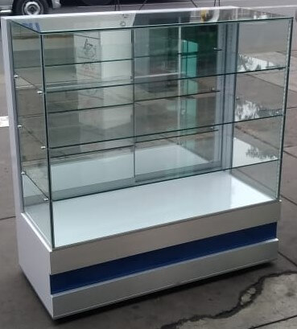
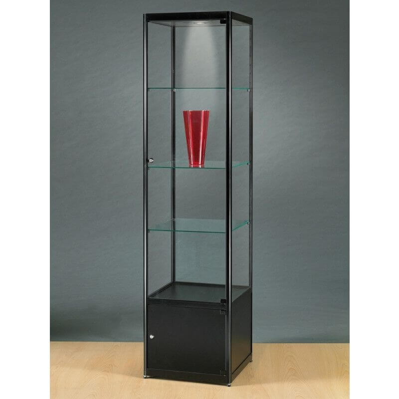
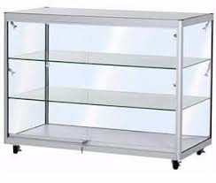
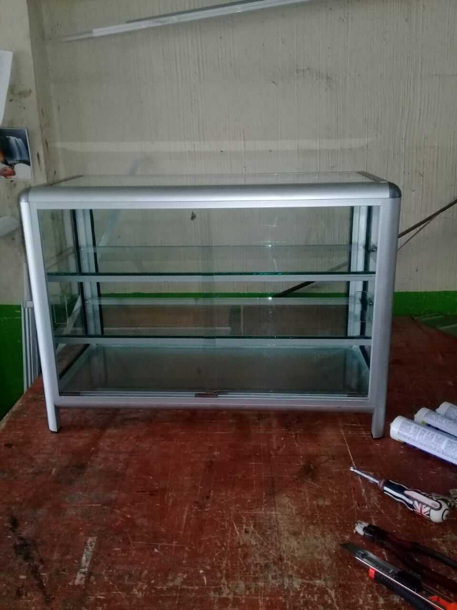
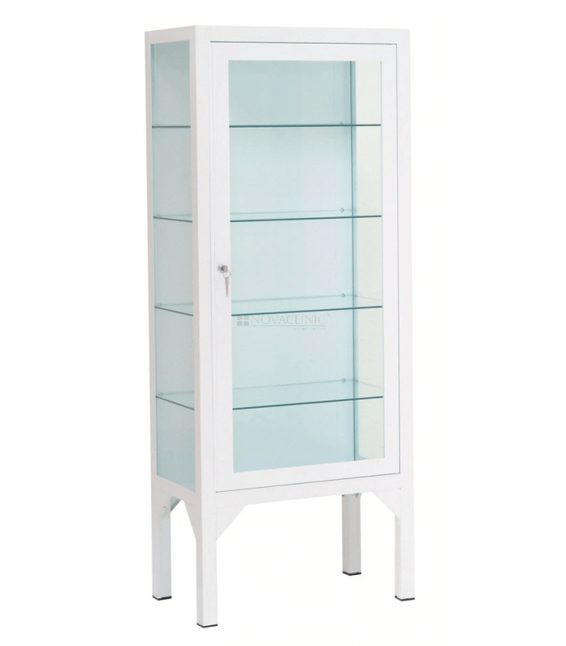
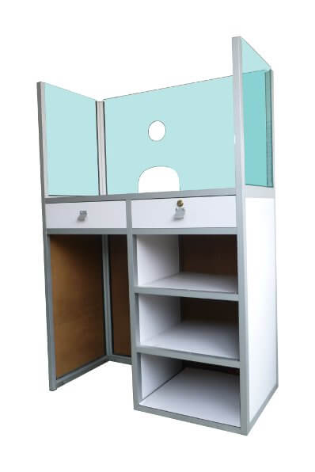
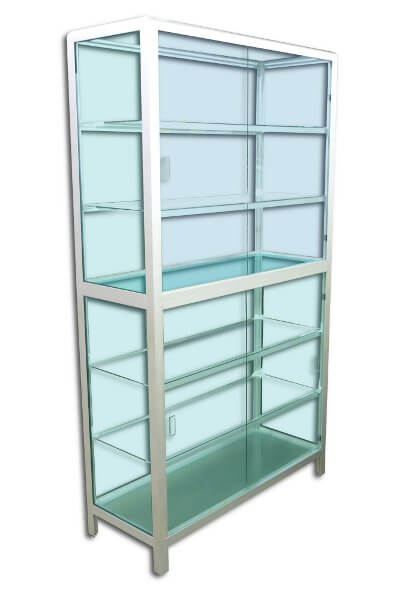
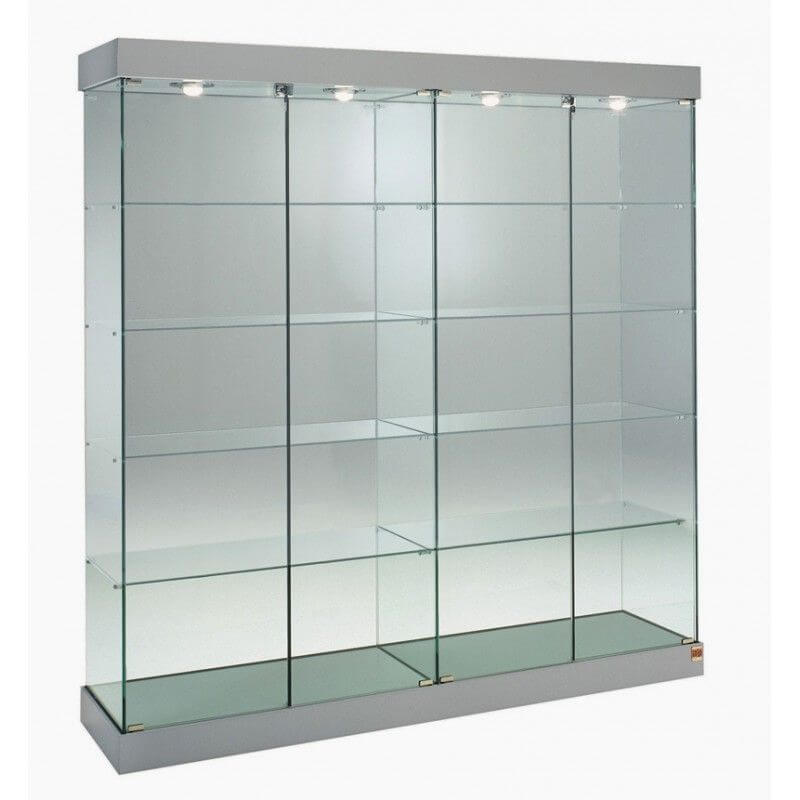

Catalogos de Vitrinas
Especialmente para tu negocio

vitrina de exhibidores

vitrina de alta

vitrina comercial

vitrina comercial

vitrina clinica
vitrina comercial

taquillera

gavetero

estante

Estante doble
vitrina
vitrina